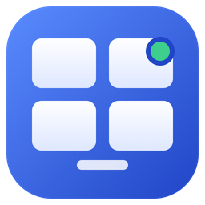

멀티뷰 PC 설치Windows PC용 · 버전 1.1.4
⬇ 설치 파일 받기 (83MB)
설치 방법
- 받은 MultiView-Setup.exe를 실행하세요. (이미 설치돼 있으면 덮어써지고, ID·비밀번호·설정은 그대로예요)
- "Windows의 PC 보호" 창이 뜨면 추가 정보 → 실행을 누르세요.
- 처음 한 번 관리자 권한 확인 창이 뜨면 예를 누르세요.
- 첫 화면에서 윈도우 시작 시 자동 실행을 켜 두세요.
휴대폰에서 PC를 보려면 → 멀티뷰 모바일